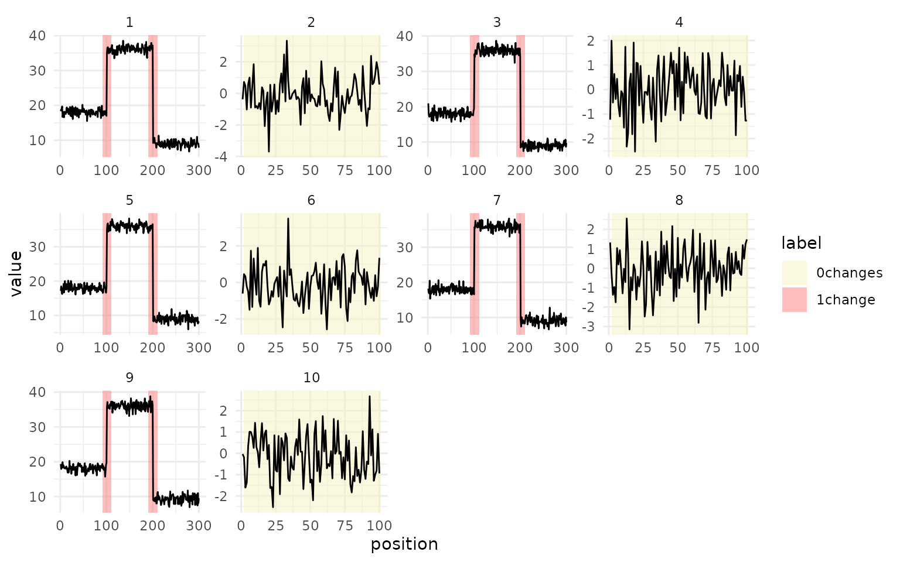
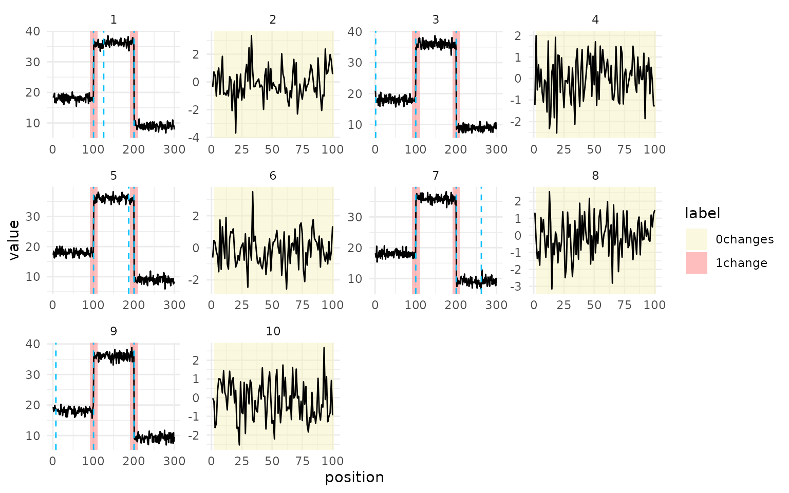
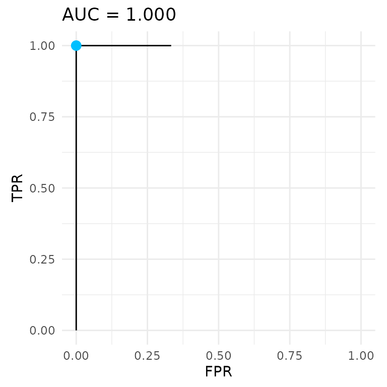

Getting started
getting-started.RmdThis page installs mlr3changepoint and runs a first
workflow, from labelled sequences to a trained learner, its predictions
and their scores.
What the package does
A changepoint model splits a sequence into segments. How many
segments it keeps depends on a penalty: a small penalty keeps many
changes and a large one keeps few. mlr3changepoint learns
that penalty from labelled examples, one value per sequence, as a
function of features of the sequence.
The labels are weak. Each one marks a region of a sequence and says
how many changes it should contain, for example 1change on
positions 90 to 110 or 0changes on a flat stretch. A label
does not give the position of a change or a value for each point. Peaks
in count data work the same way, with labels such as peaks
and noPeaks.
The package adds a "changepoint" task type to mlr3, so
its tasks, learners and measures work with resample(),
benchmark() and the tuning packages.
Installation
The package is on GitHub. Install it with pak or remotes.
dependencies = TRUE also installs the solvers and
regressors the learners use, which are suggested packages.
# install.packages("pak")
pak::pak("sleepysnorlax05/mlr3changepoint", dependencies = TRUE)
# or with remotes
# install.packages("remotes")
remotes::install_github("sleepysnorlax05/mlr3changepoint", dependencies = TRUE)The MMIT and MMIF learners need the mmit package, which is not on CRAN. The upstream sources no longer compile on macOS and Windows, so the package points to a patched copy, which both commands above install. To install it on its own:
pak::pak("sleepysnorlax05/mmit/Rpackage")A first workflow
Load mlr3, the package and data.table. ggplot2 provides
autoplot().
A task
The toy data has ten sequences. The odd ones change mean twice, at
positions 100 and 200, and carry a 1change label around
each change. The even ones are flat noise with one 0changes
label.
set.seed(36)
signal = vector("list", 10L)
label = vector("list", 10L)
for (i in seq_len(10L)) {
if (i %% 2L == 1L) {
signal[[i]] = c(rnorm(100, 18), rnorm(100, 36), rnorm(100, 9))
label[[i]] = data.table(start = c(90, 190), end = c(110, 210), label = "1change")
} else {
signal[[i]] = rnorm(100, 0)
label[[i]] = data.table(start = 1, end = 100, label = "0changes")
}
}A TaskCpt has one row per sequence. The
sequence column holds the signal, and the target column
holds a table of labelled regions for each sequence.
task = TaskCpt$new(
id = "toy", backend = data.table(signal = signal, label = label),
target = "label", sequence = "signal", label_type = "changepoint"
)
task
#>
#> ── <TaskCpt> (10x1) ────────────────────────────────────────────────────────────
#> • Target: label
#> • Properties: -autoplot() draws each sequence in its own panel, with
the labelled regions shaded.
autoplot(task)
Training and prediction
changepoint.intregrcv fits a linear model of the log
penalty with penaltyLearning::IntervalRegressionCV().
Kmax = 3 lets each sequence have up to three changes. With
only ten sequences, the internal cross-validation uses two folds and
accepts small training sets.
learner = lrn("changepoint.intregrcv", Kmax = 3L, n.folds = 2L, min.observations = 2L)
learner$train(task)
prediction = learner$predict(task)
prediction
#>
#> ── <PredictionCpt> for 10 observations: ────────────────────────────────────────
#> row_ids truth response Kmax
#> 1 <data.table[2x3]> -2.153109 3
#> 2 <data.table[1x3]> 3.619413 3
#> 3 <data.table[2x3]> -2.173955 3
#> --- --- --- ---
#> 8 <data.table[1x3]> 2.823117 3
#> 9 <data.table[2x3]> -2.064941 3
#> 10 <data.table[1x3]> 3.137978 3The prediction holds one value per sequence: the predicted
log(lambda). It also records the Kmax the
learner was trained with, which the measures and plots need to rebuild
the segmentation.
as.data.table(prediction)
#> row_ids truth response Kmax
#> <int> <list> <num> <int>
#> 1: 1 <data.table[2x3]> -2.153109 3
#> 2: 2 <data.table[1x3]> 3.619413 3
#> 3: 3 <data.table[2x3]> -2.173955 3
#> 4: 4 <data.table[1x3]> 3.057015 3
#> 5: 5 <data.table[2x3]> -1.930518 3
#> 6: 6 <data.table[1x3]> 3.668863 3
#> 7: 7 <data.table[2x3]> -2.115320 3
#> 8: 8 <data.table[1x3]> 2.823117 3
#> 9: 9 <data.table[2x3]> -2.064941 3
#> 10: 10 <data.table[1x3]> 3.137978 3Scoring
The label error is the share of labelled regions the segmentation gets wrong. The AUC is the area under the ROC curve. Both measures rebuild the segmentation from the sequences, so they need the task.
prediction$score(msrs(c("changepoint.label_error", "changepoint.auc")), task = task)
#> changepoint.label_error changepoint.auc
#> 0 1These scores are on the training sequences. The Evaluation and plots chapter scores held-out
sequences with resample().
Plots
Given the task, autoplot() of a prediction adds the
changes selected by each predicted penalty as dashed lines.
autoplot(prediction, task = task)
type = "roc" draws the ROC curve instead. The dot marks
the predicted penalties.
autoplot(prediction, task = task, type = "roc")
Next steps
The Documentation covers tasks and labels, the learners, and evaluation. Case studies has longer examples on copy-number profiles, peaks in count data and a benchmark of the learners.